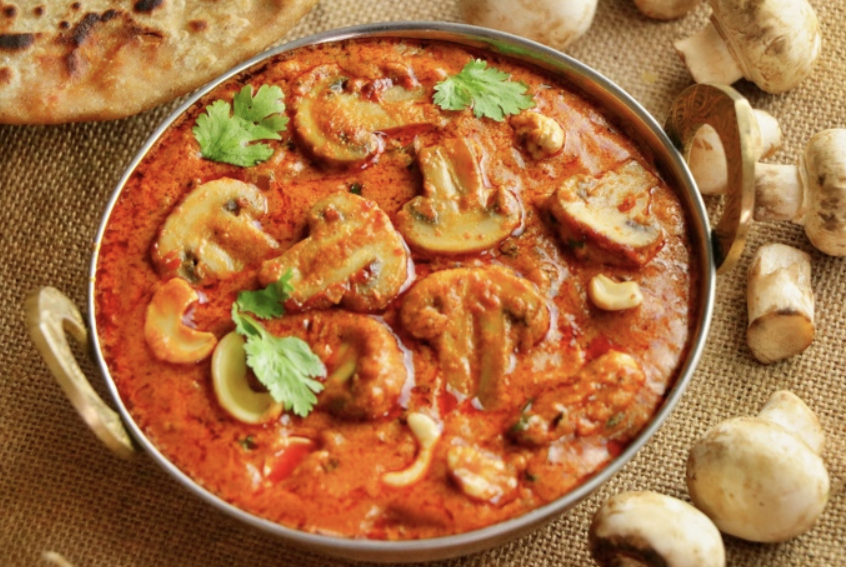

Kaju Mushroom Masala Recipe
Kaju Mushroom Masala is a rich and creamy dish made with cashews, mushrooms, and aromatic spices. Perfect
for special occasions, it pairs wonderfully with naan, roti, or steamed rice.
Ingredients
- 3 Red Tomatoes
- Small Ginger piece
- 1/4 cup Cashew nuts (Soaked for 15 mins)
- 3 Green chillies
- 4 Garlic Cloves
- 2 Cardamoms
- 3 Cloves
- 2 Red Chillies
- 1/2 tsp Pepper
- 1/4 cup Curd with Cream (malai)
- Sufficient water to grind to a soft paste
For the curry
- 1/2 cup Oli
- 3/4 cup Cashew Nuts
- 150 gms Mushrooms
- 1 Onion Thinly Chopped
- 1 tsp Cumin seeds
- 1/2 tsp Mirchi Powder
- 1/2 tsp Garam Masala
- 1/2 tsp Dry Coriander Powder
- 2 tsps Kashmiri Mirchi Powder
- 1.5 tsps Salt
- 350 ml Water
- 1 tbsp Ghee
- 2 tbsps Chopped Green Coriander
- 1/2 Lemon Juice
Preparation
- Add all the ingredients for the gravy to the mixer and grind to a soft paste without any fragments.
- Heat oil and fry half of the Cashew Nuts.
- Add Mushrooms and fry until the Cashew Nuts turn lightly golden brown and set aside.
- Add Cumin seeds, chopped onion, and fry until golden brown.
- Mix Red Chilli Powder, Kashmiri Mirchi Powder, Garam Masala, Coriander powder and fry thoroughly.
- Add the ground paste and let it cook for 3-4 minutes, add 350 ml of water and let the gravy cook until
the oil separates.
- Add salt to taste.
- When the oil separates, add Cashew Nuts and Mushrooms and let it cook for 3-4 minutes.
- Add chopped Coriander and some ghee and let it cook for another minute.
- Add the juice of a half slice of lemon and remove it from the flame.